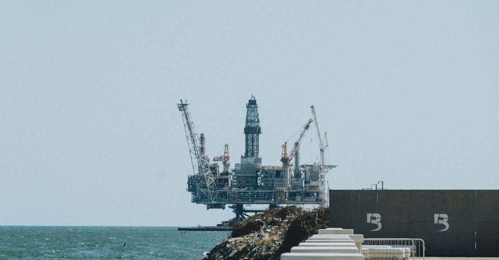
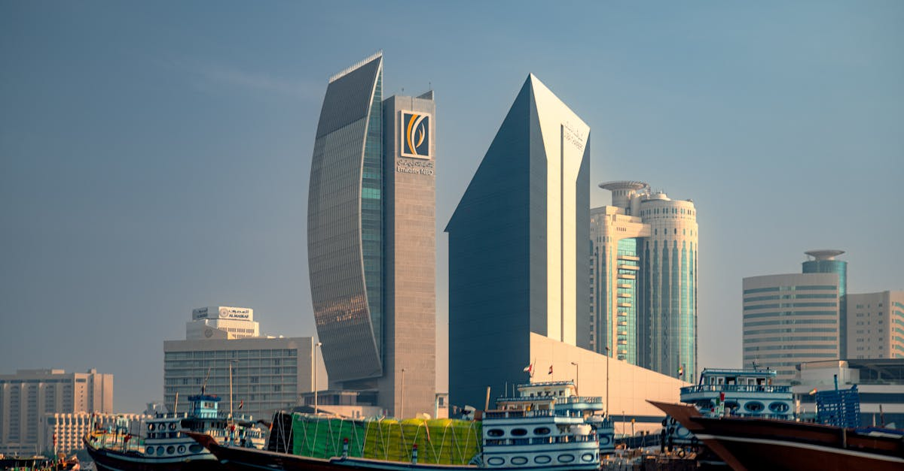

Un divorce annoncé, mais aux conséquences imprévues
La décision des Émirats Arabes Unis (EAU) de quitter l'OPEP, annoncée fin 2025, a pris de court ses partenaires et pourrait redéfinir l'équilibre géopolitique et économique du marché pétrolier mondial. Loin d'être un coup de tête, cette séparation est le fruit d'années de divergences stratégiques et de visions divergentes entre Abou Dabi et les membres historiques du cartel, menés par l'Arabie Saoudite. Pendant des décennies, l'OPEP a joué un rôle central dans la stabilisation des prix du brut en ajustant les niveaux de production. Cependant, les EAU, forts d'une croissance économique soutenue et d'une volonté affirmée d'indépendance énergétique, ont de plus en plus ressenti les contraintes imposées par les quotas de production. Ils estiment que ces limitations freinent leur potentiel d'exploitation et leur capacité à répondre aux demandes d'un marché en constante évolution. Cette fracture au sein de l'organisation, autrefois perçue comme un bloc uni, soulève des questions cruciales pour les investisseurs et les acteurs des marchés financiers. La capacité du cartel à maîtriser l'offre et, par conséquent, à influencer les prix, s'en trouve inévitablement diluée. Pour les analystes financiers, c'est une période d'incertitude qui s'ouvre, propice à une volatilité accrue sur les marchés des matières premières, y compris sur le marché des changes où les variations du prix du pétrole ont un impact direct sur de nombreuses devises majeures. La gestion proactive des risques devient alors primordiale, un domaine où les solutions d'IA pour le trading peuvent offrir un avantage significatif.
👉 À lire : Le départ des Émirats de l'OPEP : séisme pour le pétrole et le Forex

Les racines d'une discorde : visions stratégiques divergentes
La divergence entre les Émirats Arabes Unis et l'Arabie Saoudite, pilier historique de l'OPEP, n'est pas nouvelle. Elle s'est construite au fil des ans, nourrie par des ambitions nationales distinctes et une perception différente du rôle du pétrole dans l'économie mondiale du 21ème siècle. Alors que l'Arabie Saoudite, confrontée à une dépendance économique encore forte vis-à-vis des hydrocarbures, privilégie une approche prudente et coordonnée de la gestion de l'offre pour soutenir les prix, les EAU affichent une ambition différente. Ils aspirent à maximiser leur production et leurs revenus pétroliers à court et moyen terme, tout en accélérant leur diversification économique vers des secteurs comme le tourisme, la finance et les énergies renouvelables. Cette dualité de stratégie pose un défi majeur à la cohésion de l'OPEP. Les quotas de production, conçus pour maintenir un équilibre, sont devenus pour Abou Dabi un frein à son développement. Ils souhaitent plus de flexibilité pour exploiter leurs réserves, notamment celles découvertes récemment et dont le potentiel est jugé très important. La déclaration des EAU n'est donc pas tant une rupture qu'une prise de position affirmée pour une autonomie décisionnelle, reflet d'une puissance économique et diplomatique grandissante sur la scène internationale. Cette évolution interne à l'OPEP impacte directement les anticipations des marchés. La capacité de l'organisation à réagir de manière unifiée face aux chocs d'offre ou de demande est remise en question, ouvrant la porte à des fluctuations de prix plus importantes, un environnement que les algorithmes de trading sont conçus pour analyser et exploiter.
👉 À lire : Walmart Lève des Fonds : Opportunités pour les Investisseurs
L'Arabie Saoudite et la quête de stabilité
Au cœur de l'OPEP, l'Arabie Saoudite a toujours joué un rôle de leader, orchestrant les décisions de production pour tenter de garantir la stabilité des prix du pétrole, un objectif vital pour son économie. La vision saoudienne repose sur une gestion rigoureuse de l'offre, souvent synonyme de réductions de production lorsque la demande fléchit ou que les stocks s'accumulent, afin de soutenir le baril. Cette approche, bien que parfois impopulaire auprès des pays désireux d'augmenter leur production, a longtemps permis au cartel de conserver une influence considérable sur le marché mondial. Le Royaume a investi massivement dans sa capacité de production, mais sa stratégie vise également à anticiper la transition énergétique en diversifiant son économie, à travers des projets ambitieux comme la ville futuriste de Neom. Cependant, cette stratégie de stabilisation se heurte de plus en plus aux réalités d'un marché complexe et aux ambitions de certains de ses membres. La volonté de l'Arabie Saoudite de maintenir une certaine prévisibilité dans l'offre et les prix est directement mise à l'épreuve par le départ des EAU. Cela signifie que le pouvoir de négociation de l'OPEP est amoindri, et que les décisions futures devront peut-être prendre en compte un paysage énergétique plus fragmenté. Pour les acteurs du trading, cette instabilité potentielle se traduit par une nécessité accrue de surveillance des annonces saoudiennes et des réactions des autres producteurs, un flux d'informations que les systèmes de trading automatisé peuvent traiter à une vitesse inégalée.

Les Émirats Arabes Unis : ambition et indépendance énergétique
Les Émirats Arabes Unis ont toujours eu une approche distincte au sein de l'OPEP. Pays producteur majeur, ils ont néanmoins une vision plus dynamique et parfois divergente de la gestion du marché. Leur décision de quitter l'organisation ne fait que confirmer une tendance de fond : celle d'une affirmation de leur souveraineté énergétique et d'une volonté de maximiser le potentiel de leurs ressources. Les EAU disposent de réserves considérables et ont récemment intensifié leurs efforts d'exploration, découvrant de nouveaux gisements prometteurs. Ils estiment que les contraintes de quotas imposées par l'OPEP les empêchent de pleinement capitaliser sur ces découvertes et de répondre à la demande mondiale croissante. Leur stratégie vise à accroître leur capacité de production, tout en investissant massivement dans les énergies renouvelables et en se positionnant comme un hub mondial pour le commerce et la finance. Cette approche proactive, axée sur l'innovation et la diversification, contraste avec la gestion plus conservatrice de certains membres de l'OPEP. Les EAU souhaitent avoir la liberté d'ajuster leur production en fonction des opportunités de marché, sans être liés par les décisions collectives du cartel. Cette indépendance retrouvée pourrait leur permettre de jouer un rôle plus important sur la scène énergétique mondiale, potentiellement en nouant des alliances stratégiques avec d'autres producteurs ou consommateurs. Pour les traders, cela signifie une nouvelle variable à intégrer dans leurs modèles d'analyse, car les décisions unilatérales des EAU pourraient avoir un impact significatif et rapide sur les flux pétroliers mondiaux et, par ricochet, sur les marchés des devises.
Impact sur les prix du pétrole : volatilité attendue
Le retrait des Émirats Arabes Unis de l'OPEP est susceptible d'engendrer une période de volatilité accrue sur les marchés pétroliers. Historiquement, l'OPEP a réussi à influencer les prix en coordonnant les décisions de ses membres concernant les niveaux de production. Avec le départ d'un acteur majeur comme les EAU, la capacité du cartel à agir de manière unifiée et décisive s'en trouve affaiblie. Cela pourrait se traduire par une plus grande difficulté à réagir aux déséquilibres entre l'offre et la demande, ouvrant la porte à des fluctuations de prix plus importantes et moins prévisibles. Les marchés financiers, et particulièrement le secteur du trading, réagissent fortement à l'incertitude. La moindre nouvelle concernant la production, les stocks ou les tensions géopolitiques pourrait déclencher des mouvements de prix plus amples. Les pays non-OPEP, notamment les États-Unis avec leur production de pétrole de schiste, pourraient gagner en influence, compliquant davantage la dynamique du marché. L'absence d'une voix unifiée au sein de l'OPEP pourrait également laisser place à une concurrence accrue entre les producteurs, chacun cherchant à maximiser sa part de marché. Cette compétition pourrait, à terme, exercer une pression à la baisse sur les prix, mais le chemin pour y parvenir risque d'être semé d'embûches et de périodes de forte instabilité. Pour les traders en devises, l'impact est direct : les devises des pays exportateurs de pétrole, comme le dollar canadien ou la couronne norvégienne, deviendront plus sensibles aux variations du prix du brut. Une bonne compréhension de ces dynamiques est essentielle, et c'est là que l'analyse prédictive basée sur l'IA peut offrir un avantage concurrentiel.

Conséquences pour le marché du Forex
La décision des Émirats Arabes Unis de quitter l'OPEP a des répercussions directes et indirectes sur le marché du Forex. Le prix du pétrole est l'une des principales commodités influençant les taux de change de nombreuses devises. Une volatilité accrue sur le marché pétrolier se traduit par une volatilité accrue sur le marché des changes. Les devises des pays exportateurs de pétrole, comme le dollar canadien (CAD), la couronne norvégienne (NOK) et le rouble russe (RUB), sont particulièrement sensibles aux variations du prix du brut. Une hausse du pétrole tend à renforcer ces devises, tandis qu'une baisse a l'effet inverse. De même, les devises des pays importateurs nets de pétrole peuvent être affectées par les changements dans la balance commerciale. Au-delà de ces effets directs, l'instabilité potentielle sur les marchés de l'énergie peut également influencer le sentiment général des investisseurs et les flux de capitaux mondiaux. En période d'incertitude, les investisseurs peuvent se tourner vers des devises refuges, comme le dollar américain (USD) ou le franc suisse (CHF), ou au contraire, rechercher des opportunités dans des actifs plus risqués. Les décisions stratégiques des grands producteurs de pétrole, comme celles prises par l'Arabie Saoudite ou maintenant par les EAU de manière plus indépendante, créent un environnement complexe pour les traders. Il devient crucial d'analyser non seulement les facteurs macroéconomiques classiques, mais aussi les dynamiques spécifiques au secteur de l'énergie. Les outils d'analyse technique et fondamentale doivent être complétés par une veille constante sur l'actualité géopolitique et énergétique. C'est dans ce contexte que les agents IA spécialisés dans le trading de devises peuvent faire la différence, en traitant d'énormes volumes de données en temps réel pour identifier des opportunités et gérer les risques avec une efficacité redoutable, 24h/24.
L'avenir de l'OPEP : un cartel fragilisé ?
Le départ des Émirats Arabes Unis représente un coup dur pour l'unité et la crédibilité de l'OPEP. Pendant des années, le cartel a été synonyme de pouvoir de marché, capable d'orchestrer des baisses ou des hausses de production pour influencer les prix mondiaux. Cependant, avec le retrait d'un membre influent, non seulement l'offre potentielle de l'organisation est réduite, mais sa capacité à imposer des décisions collectives est également remise en question. La dynamique interne de l'OPEP pourrait changer radicalement. L'Arabie Saoudite, bien que toujours le producteur le plus influent, pourrait se retrouver isolée dans ses tentatives de gestion concertée du marché. D'autres membres pourraient suivre l'exemple des EAU, cherchant plus d'autonomie pour exploiter leurs ressources. Cela pourrait conduire à une fragmentation progressive de l'organisation, la transformant d'un cartel puissant en une simple plateforme de discussion où les intérêts nationaux priment sur la stratégie collective. L'influence de l'OPEP sur les prix du pétrole pourrait ainsi diminuer au profit d'autres acteurs, comme les producteurs de schiste américains ou les pays producteurs hors OPEP. La transition énergétique mondiale ajoute une couche de complexité supplémentaire. Alors que le monde cherche à réduire sa dépendance aux énergies fossiles, l'utilité d'un cartel centré sur la production de pétrole pourrait être remise en question à long terme. L'avenir de l'OPEP dépendra de sa capacité à s'adapter à ce nouvel environnement, à maintenir une certaine cohésion malgré les divergences, et à trouver un nouvel équilibre de pouvoir. Pour les traders, cette redéfinition du paysage énergétique implique une vigilance accrue et une adaptation constante des stratégies d'investissement.
Opportunités pour les traders avisés
Si la décision des EAU de quitter l'OPEP introduit une dose d'incertitude, elle ouvre également des perspectives intéressantes pour les traders avertis. La volatilité accrue sur les marchés pétroliers et, par conséquent, sur les marchés des devises, crée des opportunités de profit pour ceux qui savent anticiper et réagir rapidement aux mouvements de prix. Les variations importantes sur le prix du baril de Brent ou de WTI peuvent entraîner des mouvements significatifs sur des paires de devises comme le CAD/USD, l'USD/NOK, ou encore l'EUR/CAD. De plus, la redéfinition des équilibres de pouvoir sur le marché de l'énergie pourrait favoriser de nouvelles dynamiques. Les pays qui parviennent à maintenir une production stable et compétitive, ou ceux qui bénéficient d'une demande soutenue pour leurs exportations, pourraient voir leurs devises se renforcer. Inversement, les pays dont l'économie dépend fortement des importations de pétrole pourraient subir une pression sur leur monnaie. L'analyse des flux de capitaux, des indicateurs économiques publiés par les pays producteurs et consommateurs, ainsi que la surveillance des décisions politiques des États membres de l'OPEP et des producteurs indépendants deviennent primordiales. Dans ce contexte, l'utilisation d'outils d'analyse avancés, capables de traiter et d'interpréter une grande quantité d'informations en temps réel, est un atout majeur. Les agents IA, par leur capacité à fonctionner sans relâche et à identifier des schémas complexes dans les données de marché, sont particulièrement bien adaptés pour naviguer dans cet environnement changeant et potentiellement lucratif. Ils permettent de saisir des opportunités de trading que l'analyse humaine seule pourrait manquer.
Conclusion : Naviguer dans l'incertitude avec l'IA
La décision des Émirats Arabes Unis de se retirer de l'OPEP marque un tournant significatif dans l'histoire du marché pétrolier et, par extension, dans l'économie mondiale. Elle reflète une évolution des priorités stratégiques des nations productrices et une prise de conscience de la nécessité d'une plus grande flexibilité face aux défis énergétiques et économiques du 21ème siècle. L'affaiblissement potentiel de l'OPEP, la volatilité accrue des prix du pétrole et l'impact sur les marchés des changes créent un environnement complexe mais potentiellement riche en opportunités pour les investisseurs. Dans ce paysage en mutation rapide, où les informations affluent de toutes parts et où les décisions se prennent à la vitesse de l'éclair, la capacité à analyser, anticiper et réagir devient cruciale. Les méthodes de trading traditionnelles peuvent montrer leurs limites face à la complexité et à la vitesse des marchés actuels. C'est ici qu'intervient la technologie. Un agent IA spécialisé dans le trading de forex, tel que celui proposé par ForexBot AI, est conçu pour relever ces défis. En traitant en continu des données provenant de sources multiples – actualités économiques, indicateurs financiers, flux de transactions, etc. – et en appliquant des algorithmes sophistiqués, il est capable d'identifier des opportunités de trading avec une précision et une rapidité inégalées. Opérant 24h/24, il assure une présence constante sur les marchés, permettant aux traders de bénéficier d'une gestion de portefeuille optimisée et d'une meilleure maîtrise des risques, même dans les périodes d'incertitude les plus prononcées. L'ère de l'investissement automatisé et intelligent est là, offrant des solutions concrètes pour naviguer avec succès dans les complexités du marché financier mondial.